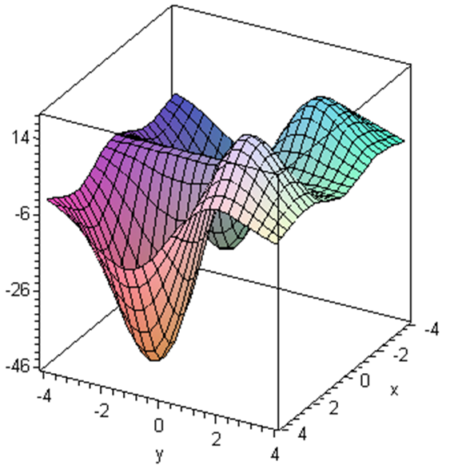
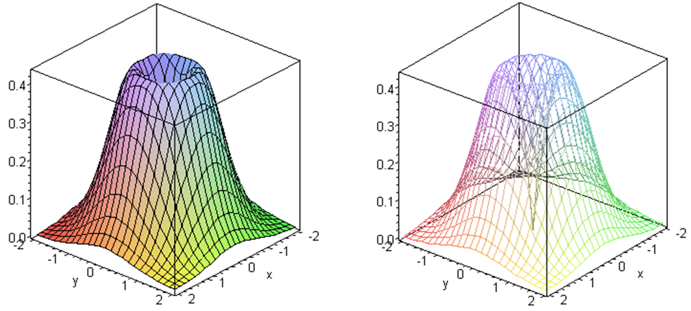
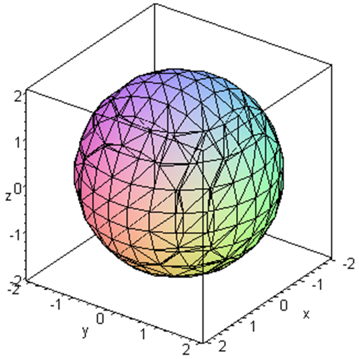
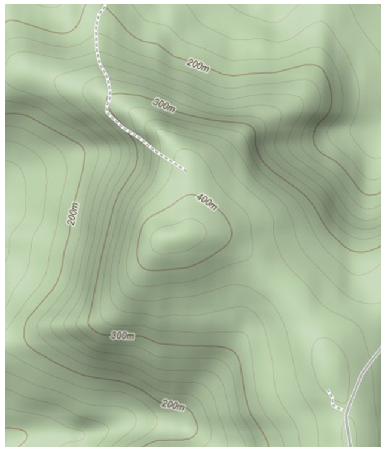
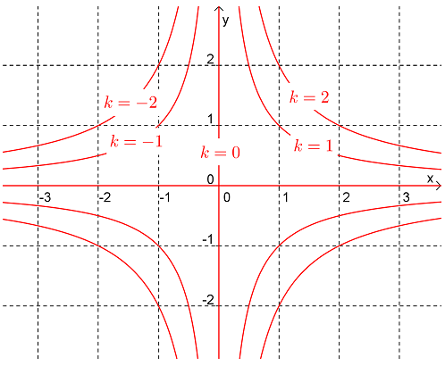
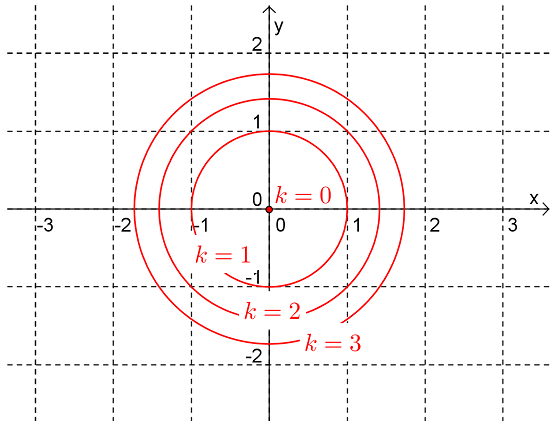
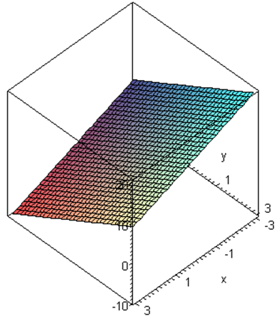
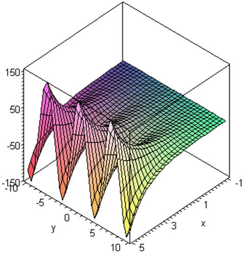
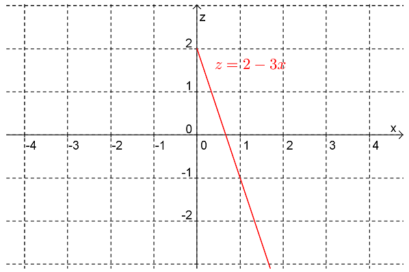

where \(D\subseteq\mathbb{R}\) is called the domain. We used the notation \(y=f(x)\) to denote such functions where \(x\) denotes the independent variable and \(y\) the dependent variable.
We have seen that functions of one variable are useful in practice but (of course) there are many real world relationships that are more complicated and can’t be well modelled by these functions.
Example1.1.
Suppose that we have a thin metal plate and that we are interested in the temperature \(T\) on this plate. In general the temperature will vary from point to point. If we imagine a coordinate grid on the plate then points on the plate can be identified by their coordinates \((x,y)\text{.}\) Thus \(T\) will depend on two independent variables, \(x\) and \(y\text{.}\) Thus we would write
\begin{equation*}
T(x,y)
\end{equation*}
and say that \(T\) is a function of two variables.
Example1.2.
Many of the formulas you’ve come across in school are actually functions of several variables, such as:
The kinetic energy of an object of mass \(m\) and velocity \(v\) is given by the two-variable function
The magnitude of the gravitational attraction between two objects of masses \(m_1\) and \(m_2\text{,}\) separated by a distance of \(r\text{,}\) is given by the three variable function
The set \(D\) is called the domain of the function. Unless specified otherwise, we take \(D\) to be the largest possible set of inputs for which we can calculate \(f\text{.}\) The range of \(f\) is the associated set of values that \(f\) takes on.
Example1.4.
Consider the function \(f(x,y)=\ln(x-y-1)\text{.}\)
Find the domain of \(f\)
Find:
\(\displaystyle f(3,1)\)
\(\displaystyle f(\frac{1}{2},-\sqrt{5})\)
\(\displaystyle f(1,3)\)
Answer.
\(\displaystyle D=\{(x,y):y \lt x-1\}\)
\(\displaystyle f(3,1)=0\)
\(f(\frac{1}{2},-\sqrt{5})=0.5516\) (to 4.d.p.).
\(f(1,3)\) is not defined.
Solution.
Since the argument of the log function has to be positive, the domain \(D\) is the set of points in the plane satisfying
Now that we have an idea of what a function of two variables is and what its domain is, we would like a way to visualise it, similar to how we can visualise functions of a single variable by graphing them in the plane.
The two main visualisations are graphs and contour plots. We deal with contour plots in the next section. The graph of a function of two variables \(f(x,y)\) is the surface in \(\mathbb{R}^3\) defined by
\begin{equation*}
z = f(x,y).
\end{equation*}
Thus, we imagine the "floor" to be the \(xy\)-plane of inputs \((x,y)\) to the function, and the height of the surface above (or below) this floor is the output \(z=f(x,y)\text{.}\)
A surface in \(\mathbb{R}^3\) is the graph of a function if and only if it passes the vertical line test, since a function only produces one output \(z=f(x,y)\) for each input \((x,y)\) in its domain.
In general it is hard to draw the graph of a function of two variables by hand and so usually we get a computer to do it. Various computer packages can produce such plots, such as Maple, Mathematica, Matlab, Wolfram Alpha and even GPT4 (which runs python code to produce the plots). The following plots are produced by SageMath - you can run the code cells to produce 3D plots which you can manipulate yourself.
Example1.7.
Produce the graph of the function \(z=f(x,y)=x^2+y^2\)
Solution.
This surface is an example of a paraboloid. It is used for satellite antennas.
Example1.8.
Produce the graph of the function \(z=f(x,y)=xy\)
Solution.
This surface is an example of a hyperbolic paraboloid.
Example1.9.
Produce the graph of the function \(f(x,y)=x(3y-2)(5x+2)e^{-(x^2+y^2)/5}\)
Solution.

Figure1.10.3D plot of \(f(x,y)=x(3y-2)(5x+1)e^{-(x^2+y^2)/5}\)
Example1.11.
Produce the graph of the function \(f(x,y)=\sqrt{x^2+y^2}e^{-(x^2+y^2)}\)
Solution.

Figure1.12.3D plot of \(f(x,y)=\sqrt{x^2+y^2}e^{-(x^2+y^2)}\)
Not all surfaces in \(\mathbb{R}^3\) represent the graph of a function of two variables.
Example1.13.
The surface associated with the equation \(x^2+y^2+z^2=4\) is a sphere of radius \(2\) and whose centre is the origin. Clearly this surface does not pass the vertical line test. For example, when \((x,y)=(0,0)\text{,}\)\(z\) could be either \(+2\) or \(-2\text{.}\)

Figure1.14.3D plot of \(x^2+y^2+z^2=4\)
ExercisesExample Tasks
1.
Determine the domain of the function \(f(x,y)=\dfrac{\sin(y)}{xy-1}\text{.}\)
2.
Sketch the graph of the following functions.
\(\displaystyle f(x,y)=3\)
\(\displaystyle f(x,y)=-x-2y+2\)
Section1.3Level Curves and Contour Plots
As we have seen, visualising the surface corresponding to the function \(z=f(x,y)\) can be quite difficult, in particular if you’re limited to a static image in two dimensions (such as printed on paper). Another way to visualise a function of two variables is to use a contour plot. Here one plots contours, also known as level curves, each of which consists of all the input points for which the output is a certain constant value. This is commonly used in topographic maps, where the contours show points on the map of a given altitude. With a bit of practise, you can visualise the shape of the landscape just from a topographic map.

Figure1.15.Sample Topographic Map (Part of the Watagan Mountains)
Definition1.16.
level curves\(z=(x,y)\)\(xy\)\(z=k\text{,}\)\(k\)
Note:
Each point in the domain of the function lies on exactly one level curve.
When a collection of level curves for a function are drawn on the same plane it is also called a contour plot.
We can also think of level curves as the intersection of the surface and the horizontal plane \(z=k\text{.}\)
Example1.17.
Draw the level curves associated with \(k=-2,-1,0,1,2\) for the function
\begin{equation*}
z=xy
\end{equation*}
Solution.
The level curves of a function satisfy the equation \(z=k\text{.}\) So for this function the level curves are:
\begin{equation*}
xy=k \textrm{ or }y=\frac{k}{x}
\end{equation*}
Thus the level curves are rectangular hyperbolae (except for \(k=0\)). The level curves for \(k=-2,-1,0,1,2\) are shown in following diagram.

Figure1.18.Rectangular hyperbolae \(y=\frac{k}{x}\) for various values of \(k\)
Example1.19.
Draw a contour plot for the function \(z=x^2+y^2\text{.}\)
Solution.
The contours (i.e. level curves) of a function satisfy the equation \(z=k\text{.}\) So for this function the level curves are:
\begin{equation*}
x^2+y^2=k
\end{equation*}
that is, circles centred on the origin and whose radius is \(\sqrt{k}\text{.}\)

Figure1.20.Circles \(x^2+y^2=k\) for various values of \(k\) Notice that there are no level curves when \(k\lt 0\text{.}\) This tells us that the surface does not go below the \(xy\)-plane.
Here is a SageMath cell that lets you compare graphs and contour plots of different functions. Note that if you fill in the regions between the contours with colours related to the output values you get a colourful plot known as a heat map.
ExercisesExample Tasks
1.
Draw the level curves associated with \(k=-2,-1,0,1,2\) for the function
Make a rough sketch of the contour map (centred on the origin) for the function whose graph is:

Figure1.21.
3.
Make a rough sketch of the contour map (centred on the origin) for the function whose graph is:

Figure1.22.
Section1.4Functions of 3 (or more) Variables
Although we won’t do much with them in this course it is possible to define (real valued) functions in \(n\) variables where \(n\) is any natural number, that is functions of the form \(f:\mathbb{R}^n\rightarrow\mathbb{R}\text{.}\)
Example1.23.
The function \(f(x,y,z)=x^2+y^2+z^2\) is a function of the form \(f:\mathbb{R}^3\rightarrow\mathbb{R}\) .
Example1.24.
The function \(f(w,x,y,z)=2wx^2+yz+\frac{w}{(x+z)}\) is a function of the form \(f:\mathbb{R}^4\rightarrow\mathbb{R}\) .
Visualising such functions is difficult. One option to visualise a function \(f(x,y,z)\) of three variables is to make 3D plots of its level surfaces. These are the surfaces defined by \(f(x,y,z) = k\) for various values of the constant \(k\text{.}\) This is the same idea as plotting level curves, except now we’re in one dimension higher.
Example1.25.
The following SageMath cell displays three level surfaces of the function
We will see later in the course that, rather than using level surfaces to gain understanding a given function, we can gain understanding of a given surface by viewing it as the level surface of a function.
Section1.5Further Topics
Subsection1.5.1Surfaces of Revolution
The surface associated with the graph of \(f(x,y)=\sqrt{x^2+y^2}e^{-(x^2+y^2)}\) (see Example 1.11) is an example of a special kind of surface... a surface of revolution.
Definition1.26.
A surface of revolution is a surface in \(\mathbb{R}^3\) obtained by rotating a curve about an axis.
Suppose we have a curve \(z = g(x), \; x\geq 0\) in the \(xz\)-plane, and we rotate this curve above the \(z\)-axis. What would be an equation for the resulting surface of revolution?
Consider a point \(P=(x,0,z)\) on the curve above the \(x\)-axis in 3D space. Its height above the \(xy\)-plane is \(z = g(x)\text{.}\) As we rotate the curve about the \(z\)-axis, the point \(P\) traces out a horizontal circle on the resulting surface of revolution. The radius \(r\) of this circle equals the original \(x\)-coordinate of the point when it started above the \(x\)-axis, and the height of the circle above the \(xy\)-plane equals \(g(r)\text{.}\) The height of an arbitrary point \(Q=(x,y,z)\) on the surface of revolution is thus \(z=g(r)\text{,}\) where \(r=\sqrt{x^2+y^2}\) is the radius of the circle on which the point \(Q\) lies. This tells us that an equation for the surface of revolution is
\begin{equation*}
z = g(\sqrt{x^2+y^2}).
\end{equation*}
Another way to see this is that, as a result of the rotational symmetry of the surface, the height of the surface above a point \((x,y)\) on the \(xy\)-plane depends only on the distance \(r=\sqrt{x^2+y^2}\) of the point \((x,y)\) from the origin.
The following SageMath code shows the partial surface of revolution obtained by rotating the curve \(z = g(x) = \sin(x)\) about the \(z\)-axis.
Example1.27.
Determine the equation of the surface obtained by rotating the curve in the \(xz\)-plane \(z=g(x)=2-3x, x\geq 0\) about the \(z\)-axis.

Figure1.28.Plot of \(z=2-3x\) in the \(xz\)-plane for \(x\geq 0\text{.}\)Answer.
\(f(x,y)=2-3\sqrt{x^2+y^2}\)
Example1.29.
Determine the equation of the surface obtained by rotating the curve in the \(xz\)-plane